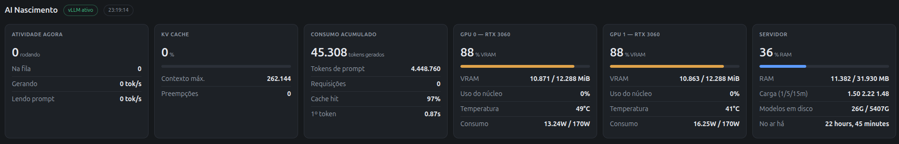
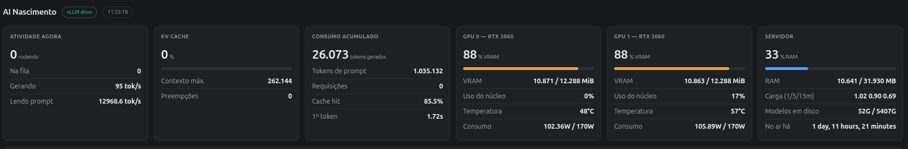

Igor Nascimento
Igor Nascimento O abismo entre o terminal e o time
Existe um abismo gigante entre "rodar uma IA no terminal" e "servir um modelo para uma equipe inteira usar em tempo real". E quase todo mundo só descobre isso da pior forma: quando a memória bate no teto e duas pessoas tentam mandar mensagem ao mesmo tempo.
Foi enfrentando exatamente esse gargalo que decidi construir uma infraestrutura própria: um servidor com duas GPUs dedicadas, duas RTX 3060 de 12 GB, capaz de entregar mais de 160 tokens por segundo agregados para o time usar simultaneamente, sem fila e com latência baixa. Este texto é sobre o caminho até lá, e sobre o painel que construí para enxergar o que estava acontecendo, porque sem ele eu estaria chutando.
Por que o Ollama não bastou
O Ollama é fantástico para prototipagem rápida e para uso individual. Baixa o modelo com um comando, troca de modelo em segundos, roda em qualquer máquina. Eu continuo usando no notebook. O problema começa quando se tenta transformar esse setup num serviço compartilhado. O fluxo tradicional atende uma requisição por vez por modelo carregado; há configuração para paralelismo, mas o motor não foi desenhado em torno disso. Se alguém pede um resumo longo, os outros ficam na fila esperando aquele decode terminar. E cada requisição tem seu KV cache alocado de forma simples, o que desperdiça VRAM e limita quantas cabem ao mesmo tempo.
Para um usuário, nada disso aparece. Para seis, aparece na primeira manhã.
Ollama
- Instalação e troca de modelo imediatas
- Convive com outras coisas na GPU; aloca o que precisa
- Concorrência limitada; fila quando há mais de um pedido longo
- Ideal para desenvolvimento e uso pessoal
vLLM
- Reserva a GPU inteira na inicialização; troca de modelo é lenta
- Continuous batching e PagedAttention de fábrica
- Paralelismo de tensor entre placas com uma flag
- Ideal para servir vários usuários com métricas
A barreira invisível da VRAM
Em inferência, velocidade é reflexo da largura de banda de memória. A VRAM de uma GPU dedicada transfere dados várias vezes mais rápido do que a RAM do sistema e ordens de grandeza mais rápido do que um NVMe. Para sustentar 160 tokens por segundo com fluidez constante, o modelo tem que estar inteiramente carregado na VRAM, com o KV cache junto. Se apenas 5% ou 10% transbordar para a RAM, o throughput desaba, e não proporcionalmente: a parte lenta domina a conta, como mostro em outro texto sobre a hierarquia de largura de banda. Essa foi a primeira lição do servidor, aprendida da forma dolorosa, com o modelo "quase cabendo".
A solução foi dividir o modelo entre as duas placas com paralelismo de tensor. Cada uma carrega metade dos pesos, e as bandas das duas VRAMs se somam. O custo é a sincronização pelo PCIe a cada camada, que existe e aparece nos números, mas é muito menor do que o custo de transbordar.
Continuous batching e o KV cache dinâmico
A virada de chave foi migrar para um motor de inferência feito para produção. Em vez de criar filas bloqueantes, o vLLM aplica continuous batching: requisições que chegam entram direto no ciclo de geração que já está rodando, e as que terminam saem, sem esperar o lote inteiro. Como o decode é limitado por memória, gerar para oito sequências ao mesmo tempo custa quase a mesma leitura de pesos que gerar para uma. É daí que vêm os 160 tokens por segundo agregados: não é uma sequência a 160, são várias sequências compartilhando a mesma passagem pelos pesos.
Aliado a isso, o PagedAttention transforma a alocação do KV cache em algo parecido com memória virtual: blocos pequenos, não contíguos, alocados sob demanda e compartilhados entre sequências que têm o mesmo prefixo. É o que permite altas taxas de acerto de cache e respostas rápidas mesmo sob concorrência.
A telemetria, número por número
Para validar e acompanhar esse comportamento, montei um painel próprio. Dois instantes dele contam a história melhor do que eu.


O que cada número diz:
- 88% de VRAM nas duas placas, com zero requisições. O vLLM reserva uma fração configurada da memória na inicialização, descarrega os pesos (10,8 GB em cada placa, metade do modelo em cada uma) e transforma o resto em pool de KV cache. O número não muda com a carga. Se mudasse, seria sinal de problema.
- Contexto máximo 262.144. Não é o limite de uma conversa; é o total de tokens que o pool de KV cache comporta somando todas as sequências vivas. É a "folga de contexto dinâmico" que decide quantas pessoas cabem ao mesmo tempo.
- Preempções zero. A métrica que eu mais vigio. Preempção é quando o pool acaba e o escalonador precisa expulsar uma sequência. Zero sob carga normal significa que o dimensionamento está certo. Qualquer valor acima de zero significa que a latência vai oscilar sem explicação aparente.
- 12.968,6 tokens por segundo lendo, 95 gerando. As duas fases da inferência, no mesmo instante. Prefill paralelo e limitado por computação; decode sequencial e limitado por banda. A diferença de 136 vezes não é ineficiência: é física, e é por isso que as duas métricas de latência, primeiro token e tokens por segundo, precisam ser olhadas separadamente.
- Cache hit de 97% e 85,5%, primeiro token de 0,87 e 1,72 segundo. O prefix caching é a alavanca que mais mexe na latência percebida. Prompt de sistema e histórico da conversa não são recalculados quando estão no cache; só o sufixo novo passa pelo prefill. Quando a taxa de acerto cai, o primeiro token sobe na mesma hora.
- 4,4 milhões de tokens de prompt para 45 mil gerados. Essa proporção, quase cem para um, diz muito sobre o time: a carga é de contexto, documentos e histórico, não de texto longo gerado. É um workload em que o prefix caching vale ouro e em que o prefill, não o decode, é o que mais consome a GPU. Sem o painel, eu teria otimizado a coisa errada.
- 48 e 57 °C sob carga, 102 e 106 W de 170 W. Temperaturas longe do throttling, consumo bem abaixo do limite, núcleos quase ociosos mesmo gerando. É a assinatura de um workload limitado por memória, e é o que permite limitar a potência das placas sem perder throughput.
O painel também registra uso por pessoa: requisições, tokens gerados, tokens de prompt. Serve para duas coisas: saber quem usa o quê, para planejar capacidade, e perceber quando uma integração automatizada está consumindo mais do que todos os humanos juntos.
O que a migração custou
Nada disso veio de graça, e é importante dizer o que piorou:
- As GPUs ficaram dedicadas. O vLLM reserva a memória na inicialização. Não dá para rodar outra coisa nelas, nem um segundo modelo pequeno, sem reconfigurar.
- Trocar de modelo virou um evento. No Ollama, segundos. No vLLM, parar o serviço, subir de novo, esperar carregar e aquecer. Para um serviço de time isso é aceitável; para experimentação, não. O Ollama continua no notebook por isso.
- A configuração passou a exigir contas. Fração de memória, comprimento máximo de contexto, número de sequências simultâneas, paralelismo de tensor. Errar qualquer um desses dá OOM na inicialização ou preempção sob carga. O painel existe para ver o resultado das escolhas.
- Paralelismo de tensor em PCIe tem teto. Sem NVLink, a sincronização entre as placas come parte do ganho, e aparece em prompts longos. Funciona bem para o nosso padrão de uso; não funcionaria igual com lotes grandes de documentos.
Colocar inteligência artificial para rodar localmente com alta performance não é mágica de software. É ajuste fino de arquitetura e respeito aos limites do hardware. E a única forma de respeitar um limite é conseguir enxergá-lo, o que é o motivo de o painel ter sido a primeira coisa que construí depois do servidor.
Resumo da conversa
- Ollama é para um; vLLM é para muitos. O abismo aparece na primeira vez que duas pessoas mandam mensagem juntas.
- O modelo precisa caber inteiro na VRAM com o KV cache. Transbordar um pouco custa muito. Duas placas em paralelismo de tensor somam banda.
- Continuous batching e PagedAttention são o que transforma "um de cada vez" em 160 tokens por segundo agregados.
- O painel: 88% de VRAM fixa, 262 mil tokens de pool, zero preempções, 12.968 lendo contra 95 gerando, cache hit de 97% dando primeiro token em 0,87 segundo, cem tokens de prompt para cada um gerado.
- O custo: GPUs dedicadas, troca de modelo lenta, configuração que exige conta, e teto do paralelismo em PCIe.